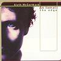

Celtic Lyrics Corner > Artists & Groups > Alyth McCormack > An Iomall > O Mo Dhúthaich
|  | O Mo Dhúthaich |
| Credits : | Traditional; arranged by Alyth McCormack, Jim Sutherland & Davey Trouton |
| Appears On : | An Iomall |
| Language : | Gàidhlig (Scottish Gaelic) |
| Other Versions : | " Oh Mo Dhùthaich " on Capercaillie's album Sidewaulk |
| Lyrics : | English Translation : |
| O mo dhùthaich 's tu th'air m'aire | Oh my country is on my mind |
| Uibhist chubhraidh ùr nan gallan | Fresh, fragrant Uist of the saplings |
| Far a faigh-te na daoin-uaisle | Where the noble men are found |
| Far'm bu dual do mhac ic Ailein | Who gave their hereditary allegiance to Mhic Ailean |
| Tìr a' mhurain, tìran eòrna | Land of sea-bed, land of barley |
| Tìr 's am pailt a ch-uile seorsa | Land of abundance of every kind |
| Far am bi na gillean òga | Where the young lads will be |
| Gabhail òran 's gol an leanna | Singing songs and drinking beer |
| Thig iad thugainn carach, seòlta | They will come to us with cunning |
| Gus ar mealladh far ar n-eòlais | In order to entice us from our homes |
| Molaidh iad dhuinn Manitoba | They will praise Manitoba to us |
| Dùthaich fhuar gun ghual, gun mhòine | A cold country with no coal or peat |
| Cha luig mi leas a bhith 'ga innse | I don't need to say it |
| Nuair a ruigear 's ann a chithear | That when we reach it we'll see it |
| Samhradh goirid, foghar sìtheil | A short summer and a peaceful autumn |
| Geamhradh fada na droch-shìde | A long winter of bad weather |
| Nam biodh agam fhin de stòras | If I had riches |
| Dà dheis aodaich, paidhear bhrògan | A change of clothes, a pair of shoes |
| Agus m' fharadh bhith 'nam phòca | A prayer in my pocket |
| 'S ann air Uibhist dhèanainn seòladh | It is to Uist I would be saying |
| O mo dhùthaich 's tu th'air m'aire | Oh my country is on my mind |
| Uibhist chubhraidh ùr nan gallan | Fresh, fragrant Uist of the saplings |
| Far a faigh-te na daoin-uaisle | Where the noble men are found |
| Far'm bu dual do mhac ic Ailein | Who gave their hereditary allegiance to Mhic Ailean |